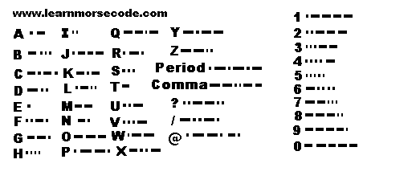

This is a Code Listening tool. This is how to use it
This is a slow recording that you can follow with the Code Listening tool :
The only way to get there is to practice 10 minutes a day.
Listen to code tapes or computer practice code while tracing out this chart and you will find
yourself writing down the letters in no time at all without the aid of the chart.
The chart brings repetition together with recognition, which you don't
get from any other type of code practice aid.
Here is a key to asist you:
